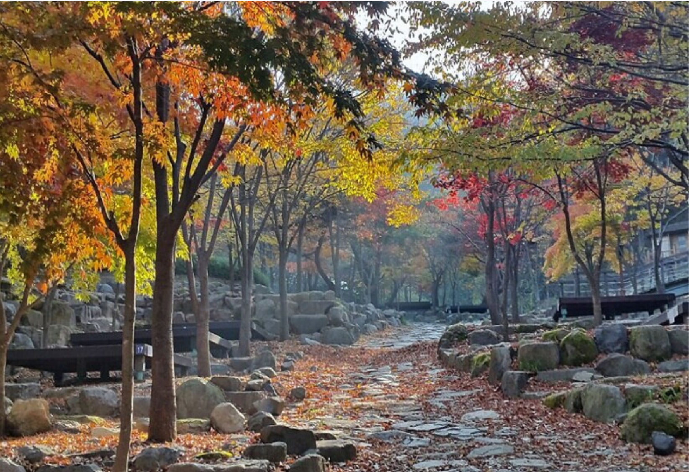
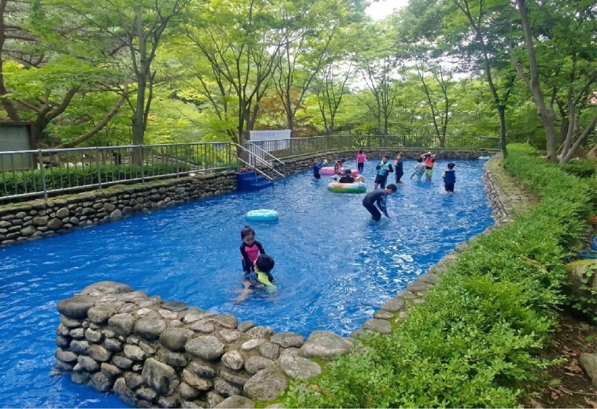
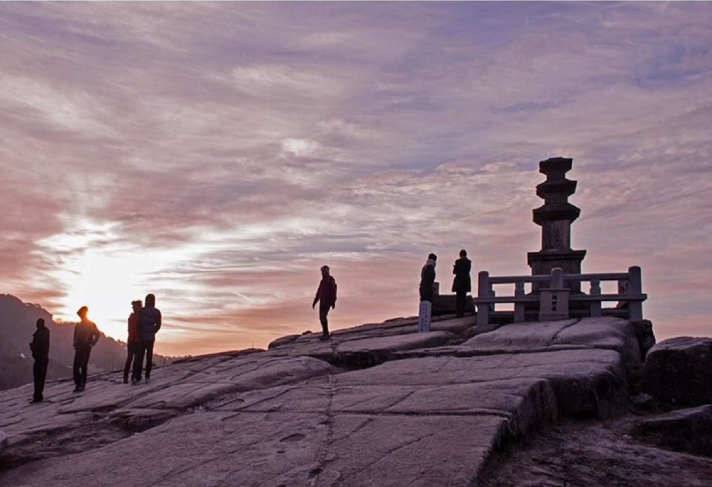

비슬산국립공원
- 비슬산국립공원
- 1996년에 개장하였으며 면적은 341만㎡이고 1일 수용인원은 3,000명이다. 달성군 시설관리공단에서 운영 및 관리를 한다.
비슬산 해발 1,058m의 조화봉을 중심으로 1,084m의 천왕봉, 989m의 관기봉을 좌우에 거느린 휴양림으로 산 중간 능선까지는
주로 침엽수립이 울창하게 숲을 이루고 있으며, 상부 능선까지는 기암괴석과 단풍이 절경을 이룬다.
봄철의 진달래와 여름 안개, 겨울 얼음도 장관이다. 능선 정상의 비교적 완만한 부분에 참억새가 군락을 이루고 있으며,
자연 경관 그대로인 수백 개의 커다란 바위가 군락을 이룬 바위마당이 있다.

비슬산국립공원
- 비슬산국립공원
- 휴양림에는 숲속의 집과 더불어 오토캠핑장, 야영장, 야외공연장, 연못, 청소년수련장, 체력단련장, 잔디광장, 사진촬영명소,
물놀이장, 산림치유센터 등 체험시설과 즐길거리가 있으며 자연석들이 널려 있는 산책로인 탐석로가 있다.
비슬산 대견봉 아래 신라시대 사찰 유가사, 도성암과 휴양림 입구에 고찰 소재사, 화원유원지, 합천호, 봉황사, 대견사 삼층석탑,
청도온천, 상대온천, 진흥왕순수비, 고려오층석탑 등의 관광지 및 유적지가 있다.

비슬산국립공원
- 비슬산국립공원
- 비슬산 대견봉 아래 신라시대 사찰 유가사, 도성암과 휴양림 입구에 고찰 소재사, 화원유원지, 합천호, 봉황사, 대견사 삼층석탑,
청도온천, 상대온천, 진흥왕순수비, 고려오층석탑 등의 관광지 및 유적지가 있다.
